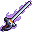

#21 · weapon_21MegabonkDexecutionerНаша иконкаVerdictПриговорЭффект оригинала в MegabonkПробивающий клинок имеет шанс казнить врага.ИсточникНаш PNG · 21Связь по ID · JSONОсновной — актуальный · weapons-current64 px32 px
 32 px
32 px